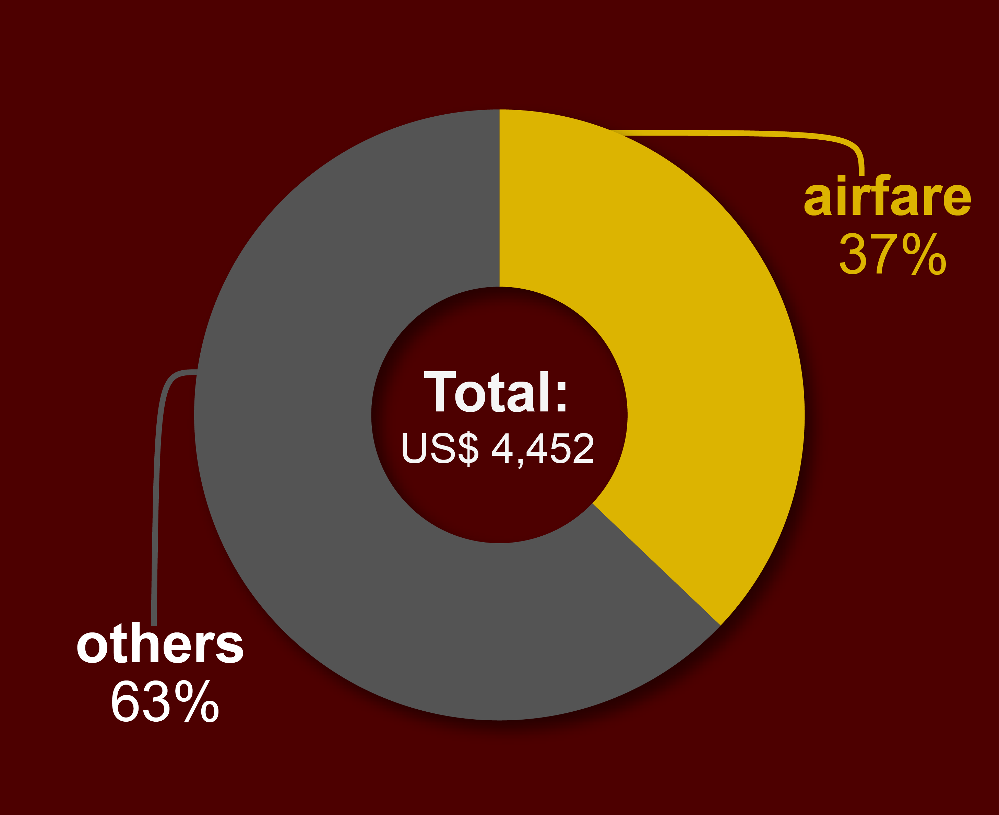
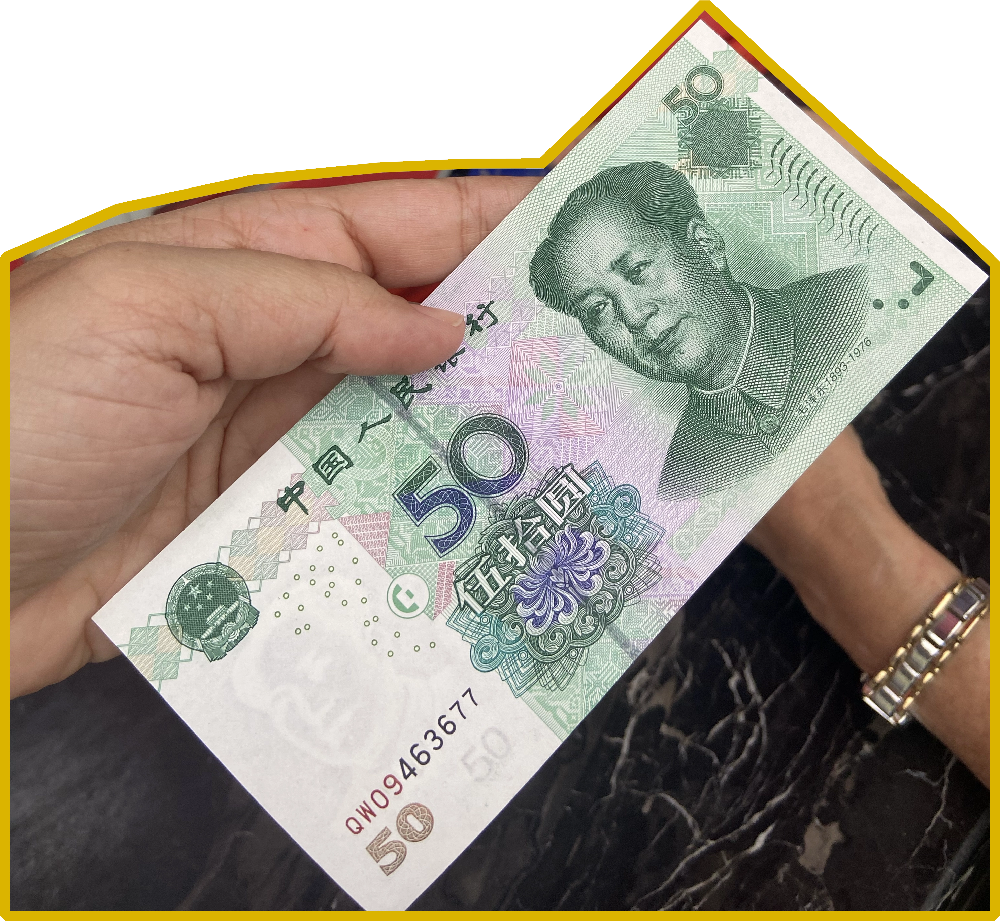

I tried to answer that with data science.
Spoiler: the short answer to this question is US$ 4,452.59.
But that would have made for a really boring website. So let's start with a little background.
Why China?
We didn't go to China because we're globetrotters. We simply had the opportunity to go because my younger sister Renata was living there for a while. That means we had free accommodation in Beijing, someone who could show us how things worked, and it's nice for my mom to visit and spend some time with her last child.
But Diva is 72 years old, speaks only a little English and no Chinese. So taking two long flights and going through customs by herself, then travelling alone around the country on the days Renata had to work, wasn't a very simple plan. Lucky for her she has two other daughters, which is where I come in.
And I'm not a China newbie: since my first trip to China in 2023 (alongside my older sister and our father), I had wanted to take my mother there too.
Planning began in late 2024. We chose May 2025 to avoid the summer heat and started scouting for good airfare deals and places we could visit.
It cost us US$ 1,652.22 each, probably the most expensive flight I've ever paid for and more than a third of the total cost of the trip.
We boarded a plane in São Paulo, Brazil on May 9th and arrived in Beijing 30 hours laters after a layover in Addis Ababa, Ethiopia.
Our return flight took off just after midnight on June 4th and, because of the magic science of timezones, roughly 27 hours later we arrived in Brazil still on June 4th.
How does money work in China?
You would think just like money has worked for around 2,600 years, right? But China has had a rapid rise of digital wallets, in part thanks to its superapps, such as Alipay and Weixin (or WeChat).
In fact, we only saw one 50 yuan bill during the entire trip, when we paid for a deposit on the Summer Palace audio guide using the app, but received the money back in cash when we returned it.
It was so eventful we took a picture of the bill:
To use the apps you sign up, confirm your personal details, add a credit card and you're good to go. You can pay for the subway, the bus, bike rentals, cab-hailing, restaurant orders or direct payments via QR code. And that's pretty much how everyone pays for things.
But payments with credit card get an extra fee charge. An alternative for users with a Chinese bank account is to transfer money to a balance account inside the app.
Renata has one, so we wired her money and she transferred money to our apps, which we used for most expenses.
She became our Renatabank: anytime our balance ran out, we'd ask for more. Then she would also end up paying directly for other purchases made on the three other important apps for foreigners in China: train and plane tickets and hotel reservations on Trip.com, and online shopping on Taobao and Meituan.
Besides, using two apps was confusing and we wanted to keep some track just to make sure our “savings account” wouldn't go negative. So sometimes, for more expensive purchases, we'd use a family credit card. And I would try to write down each expense in a note on my phone whenever I had some free time, usually on taxi rides or train and airport lounges.
These messy notes, Renata's balance account and the credit card bill were the sources for this data analysis, which had the help of AI to structure the text into a dataset and classify each of the 160+ expenses in six categories:
- Food
- Hotel
- Tickets
- Tour Agency
- Shopping
- Transportation
(Read the methodology for data extraction on GitHub.)
Where did our money go?
If 37% of the cost of the trip was just for the flights getting us there and back, where else did we spend the rest of the US$ 2,800? Well, it turns out transportation still wins without the international connecting flights:
I guess it's safe to say the most expensive part of travelling to China is getting to different places.
A breakdown of the expenses by category and by each day of the trip can show us more details about the transportation costs. We used quite a bit of e-hailing (in China, the company equivalent to Uber is called Didi), but nothing compares to the flights or train tickets.
It's a testament to how travelling by train is the most interesting option: not only is it more cost-effective, it's a lot more comfortable from longer trips to the airports, the hassle of checking in and luggage limitations… Not to mention it's less prone to delays.
Whenever we were close enough (up to four or five hours by high-speed train, going up to 300km/h), we chose the railways instead of flying. Except for the ride back from Shanghai to Beijing, when we decided to take a plane and deeply regretted it, because the delay ate the entire time advantage from the train ride.
The second most expensive category is the tour agency packages we purchased. It's a sum of two packages.
The first one was to tour Datong, which included mostly the driver for the two day-trips we took.
The other was the tour of Tibet, which is the really expensive one, because it included a tour guide, a driver or train tickets, entry tickets to monasteries and other touristic sights, accommodation at hotels and even some of the meals.
Looking at the heatmap of expenses by day and category, it's clear how this category stands out from others, and makes the spending with hotels and tickets drop to zero in the Tibetan cities of Lhasa and Shigatse, from May 24th till May 29th.
Hotel spending was also zero in Beijing, where we stayed at my sister's house.
But the fact that the Tibetan tour package concentrates spending in the Tour Agency category doesn't mean the costs are similar to other cities.
For this analysis, I joined the expenses from both cities and calculated the average by the six days we spent there. n places where we paid for our own transportation, hotel, tickets and food, the average spent by day was still lower than in Lhasa and Shigatse.
You can see the results on the map below:
The costs include all the shopping we did, such as meals, souvenirs and anything else we spent money on. That is the category that could vary the most between travellers (for example, I was entirely responsible for a big Uniqlo haul in Shanghai, whereas my mother bought so many scarves on the Silk Market in Beijing), so you can track each of them in the dispersion graph below: